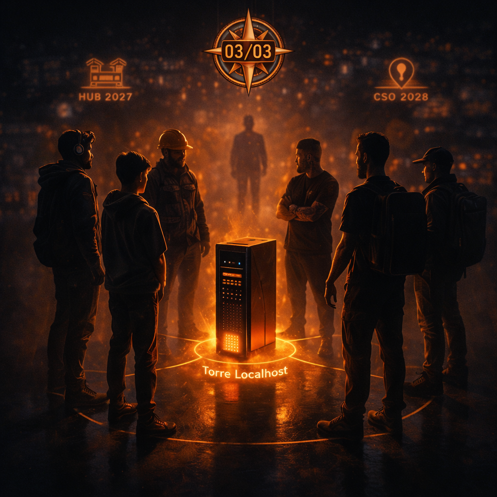

Epílogo: O Acerto de Contas
A Música Parou: Quem Ficou Junto?
Às 23h47 do dia 6 de novembro, Lucas chegou para mim com a pergunta que marca o fim de um ciclo:
"A gente conseguiu?"
Conseguimos o quê? Conseguimos algo mais modesto e mais importante: olhar para os produtos da Cara Core sem transformar cada oficina em promessa universal.
Mas aqui vem a parte difícil: nem todo mundo quer separar produto de metáfora. É tentador chamar tudo de soberania, tudo de descentralização, tudo de protocolo. Fica bonito. Também fica confuso.
PDV é ponto de venda local. Ink Agenda atende serviços com hora marcada nos perfis de tatuagem, odontologia e beleza. Circuito Ferradura aborda lógica e programação. ETE/Minerador 4.0 tem foco educacional em simulação de processos. Reino OIDC trata do aprendizado de identidade digital; Área 51, de consultoria nessa área. Hub se destina à gestão de encomendas em pontos de retirada e está em pré-release. No CSO, Frotas é gestão online; Transportes e a integração do Virtual Tracker são desenvolvimento futuro.
Quando cada um fica no seu lugar, o portfólio fica mais forte. Quando mistura tudo, a comunicação começa a prometer o que a oficina ainda não entrega.
Isso não diminui a visão. Pelo contrário. Visão sem transparência vira neblina. Produto com limite claro vira confiança.
E tem muita gente que prefere modelos prontos. Quer só executar.
Então, quando a música parou, ficou junto quem entendeu: os produtos podem conversar entre si, mas não são a mesma coisa. Cada oficina tem escopo, stack, maturidade e entrega.
Manifesto: A Convergência Sem Confusão
Convergência não significa dizer que tudo virou um produto único. Significa entender como as oficinas podem se complementar sem roubar o nome uma da outra.
PDV é caixa web local: a interface funciona no navegador, com Quarkus e SQLite no computador. Não é uma interface JavaFX. Ink Agenda é uma aplicação desktop em JavaFX com SQLite local, para agenda, clientes e financeiro de serviços com hora marcada. Seus perfis abrangem tatuagem, odontologia e beleza — isso não equivale a um sistema clínico completo.
Circuito Ferradura, ETE/Minerador 4.0 e Reino OIDC são frentes de aprendizado em programação, simulação de processos e identidade digital. Aprender com uma ferramenta não equivale a receber uma certificação profissional nem a validar um processo industrial. Área 51 é uma frente de consultoria em identidade, não uma integração automática instalada nos demais produtos.
Hub trata da gestão interna de encomendas em pontos de retirada, os PUDOs; sua pré-release é para avaliação, não uma homologação concluída. CSO Frotas é gestão administrativa online, sem rastreamento GPS. CSO Transportes e sua integração futura com o Virtual Tracker permanecem em desenvolvimento. "Amarelinha" é a metáfora da série, não uma funcionalidade já entregue.
A Anatomia da Convergência: Como Os Fios Se Tocam
Deixa eu desenhar pra você como tudo converge.
Imagine um comércio que também recebe encomendas para retirada. A venda no caixa e a organização dos volumes são problemas diferentes. PDV e Hub têm papéis distintos; um não substitui o outro. E essa proximidade não significa que seus bancos ou suas telas estejam integrados.
Uma leitura honesta começa pelo problema e pela maturidade da solução:
- PDV: venda local no computador do comércio.
- Área 51/Reino OIDC: consultoria e aprendizado em identidade digital, respectivamente.
- Hub: gestão de encomendas em pontos de retirada, em pré-release para avaliação.
- CSO: Frotas online disponível; Transportes e acompanhamento por Virtual Tracker ainda planejados, sem GPS no produto atual.
- Ink Agenda: agenda, clientes e financeiro nos perfis de tatuagem, odontologia e beleza.
- Circuito e Minerador: aprendizado de programação e simulação educacional de processos, sem promessa de habilitação profissional.
Nem todo cliente precisa de tudo. Essa é a maturidade. Vender bem é saber qual oficina responde ao problema real.
Lucas Finaliza Seu Aprendizado
Lucas veio comigo como aprendiz. Viu modem morrer no PDV. Descobriu que identidade é escopo técnico. Aprendeu que valor local pode significar coisas diferentes em Ink, PDV, Hub e Minerador. Compreendeu que oficina não é slogan. Oficina é entrega verificável.
Agora ele é operador.
Porque entendeu. Porque consegue olhar para um cliente novo e perguntar antes de vender: "Seu problema é venda? Agenda? Identidade? Formação? Logística? Entrega? Simulação técnica?".
Isso não é trabalho. É sacerdócio. É saber que você tá mudando realidade.
Os Espelhos: HUB e CSO No Horizonte
Agora que este ciclo fecha, o mapa inteiro abre. E você vê que tem dois espelhos que começam a brilhar.
Hub é o espelho do balcão que recebe e organiza encomendas para retirada. Está em pré-release e precisa ser avaliado nesse contexto, não como plataforma de vendas ou substituto do caixa.
CSO é o espelho da frota: há gestão administrativa online no Frotas, enquanto Transportes Desktop e o acompanhamento por Virtual Tracker são planos. Uma proposta de rastreabilidade não vira serviço de campo por ganhar um nome na narrativa.
O que aproxima os dois espelhos é a atenção à operação. O que os separa são os dados, as pessoas e os procedimentos de cada problema. Não há aqui promessa de comunicação pronta entre Hub, PDV e CSO.
O PDV Como Nexo
Aqui vem a coisa que poucos enxergam de primeira.
PDV é simples. Caixa registradora. Ponto de venda. Transação. Local.
Mas PDV é o ponto onde converge:
- Comércio: registrar a venda e organizar o atendimento.
- Autonomia: manter os dados localmente, sem esquecer backup e recuperação.
- Responsabilidade: conferir registros, permissões e exigências aplicáveis à operação.
Essas preocupações não tornam o PDV um rastreador ou uma garantia de conformidade legal. Seu papel continua sendo o caixa web local com SQLite; obrigações fiscais e integrações precisam ser conferidas na edição efetivamente utilizada.
Você exagera o PDV? Ele vira mito e perde precisão. Você posiciona direito? Ele vira peça clara do portfólio.
Então é por isso que este ciclo fortalece o portfólio: cada produto aparece com seu papel, sem precisar vestir a roupa do outro.
Fragmento: O Quadro da Oficina
Lucas troca o falso ar de relatório por um quadro didático. Não é saída de um sistema, registro de teste ou certificado de funcionamento:
- Caixa: PDV, com dados locais.
- Hora marcada: Ink Agenda.
- Encomendas: Hub, em avaliação como pré-release.
- Frota: CSO Frotas online, sem GPS.
- Futuro: Transportes e Virtual Tracker, ainda em desenvolvimento.
- Aprendizado: Circuito, Reino OIDC e Minerador; cada um com seu tema.
Isso é convergência honesta: não diz que tudo está fundido. Diz que o portfólio tem peças reais, cada uma com seu lugar.
O Fecho Final: Quem Aprendeu Junto
Na conversa fictícia da oficina, Lucas pergunta: "Uma equipe pequena consegue fazer um bom trabalho sem fingir que faz tudo?"
Consegue escolher um recorte, demonstrar o que fez e dizer o que ainda falta. Isso não depende de comparar um balcão com centenas de engenheiros. Equipes pequenas e grandes têm desafios diferentes; tamanho não substitui evidência de qualidade.
Antes de recomendar qualquer ferramenta, a equipe pode perguntar:
- Qual tarefa precisa funcionar todos os dias?
- Onde ficam os dados e como serão recuperados?
- O que depende de internet, configuração ou outro fornecedor?
- A versão disponível já faz isso ou estamos olhando um plano?
- Que teste podemos realizar sem arriscar a operação atual?
- Quem assume o acompanhamento quando surgir uma dificuldade?
Processos de compra e avaliação podem proteger a operação. O importante é torná-los proporcionais ao problema, com critérios compreensíveis e uma decisão que possa ser conferida.
Quando a música parou, quem ficava de pé é quem consegue decidir em conjunto. Quem consegue aprender rápido. Quem consegue errar sem morrer. Quem consegue ser ágil.
Isso não é uma fórmula garantida. É uma disciplina que pode começar amanhã: listar as tarefas críticas, separar o que já funciona do que falta e escolher um teste pequeno antes de assumir um compromisso maior.
Amarra: O Próximo Ciclo Já Aparece No Reflexo
O ciclo fechou. Não porque tudo virou uma coisa só, mas porque a comunicação finalmente pode separar os nomes.
Mas o reflexo já mostra o próximo. O espelho já tem brilho.
Hub permanece voltado à gestão de encomendas em pontos de retirada, em pré-release para avaliação. Não é uma plataforma de vendas nem uma versão homologada por força desta narrativa.
No CSO, Frotas é gestão online disponível, sem GPS nem operação offline. Transportes Desktop e Virtual Tracker integrado são futuro planejado, condicionado a implementação, testes em campo e homologação; sensores de massa e navegação estimada não são entregas anunciadas.
E o PDV continua sendo o que é: ponto de venda. Forte justamente por não precisar fingir que é Hub, CSO, Ink ou Minerador.
Quem entendeu o padrão já consegue ver os próximos espelhos. Porque compreendeu. Porque os fios se tocam.
O Que Vem Depois
Hub
Avaliar a pré-release no contexto de um ponto de retirada, sem confundir teste com aceite de produção. A vitrine do Hub deve ser consultada para a versão disponível e seus limites.
CSO
Distinguir a gestão de frota online do futuro acompanhamento de viagens. A vitrine do CSO separa Frotas disponível de Transportes em desenvolvimento.
Próximos ciclos
Quanto mais clara a fronteira entre produtos, menos a Cara Core precisa vender fumaça. O cliente entende o que compra. A oficina entende o que constrói.
Nota editorial: personagens, diálogos e situações são fictícios e didáticos; não constituem depoimentos de clientes, registros de teste ou prova de integração. A revisão de 19/11/2026 corrige escopos e distingue produto disponível, pré-release e planejamento, preservando a data original. Cada versão exige sua própria avaliação.
Hashtags
Contato
- E-mail: suporte@caracore.com.br
- Site: www.caracore.com.br
- LinkedIn: Cara Core Informática
Artigo publicado em 7 de novembro de 2026
© 2026 Cara Core Informática. Todos os direitos reservados.